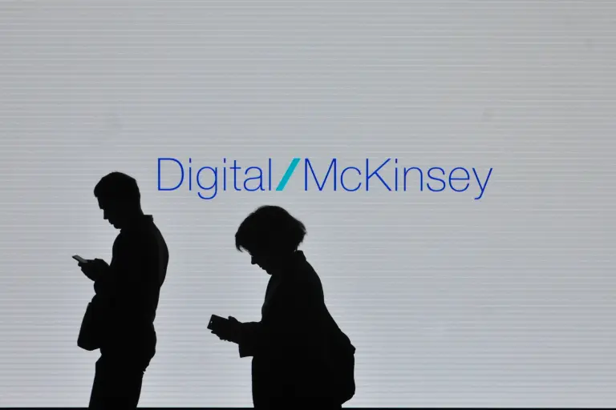

McKinsey research shows AI creating more jobs than automation displaces — but 11 million American workers will need help this decade
By Eric Kutcher and Tanguy Catlin · Fortune

While debates about AI's impact on the workforce dominate headlines, the biggest challenge ahead will be helping workers find the most direct pathway into growing jobs.
Roughly 11 million Americans may need to leave a shrinking occupation for an entirely different one. Many will find work within the occupational group they already know, but an average of 770,000 workers a year will need to cross occupational lines over the next decade, 3.6 times the historical rate. COVID-19 produced a similar surge, but it lasted a year or two. This one will last at least a decade.
Consider an administrative assistant who has spent a decade keeping a department humming along. Our research finds that automation could take on 80 percent of the hours worked in office and administrative support, the occupational group facing the largest job losses by 2035.
Administrative assistants have a pathway to a growing job that offers more pay: project manager. Their skills match a project manager's better than one might expect. They already plan, schedule, coordinate operations, document decisions, and manage stakeholders—tasks that occupy about 58 percent of what a project manager does. The gap is real but manageable: project-scheduling methods, process improvement, forecasting, quality management, and business development.
But one requirement is a high hurdle. Many project-manager postings require a bachelor's degree and a professional certification. The transition offers a substantial wage gain—and demands large investments in schooling and credentialing to make it. The binding constraint isn't whether they can do the job. It's whether they're willing to invest thousands of dollars and several years to prove it.
Other transitions are harder. A dishwasher seeking to become a home health aide, an occupation that will grow, has only about 20 percent of the required skills. They would need to learn patient assistance and vital-sign assessment and complete a month of instruction to be certified—and many employers prefer a nursing assistant credential that takes longer still. Additionally, 92 percent of healthcare support jobs are in the bottom two wage quintiles, offering little room to improve their lifestyle.
A packager moving into production fabrication, another occupation likely to grow, faces a different obstacle. About 52 percent of their skills, such as lifting, quality control, and operating equipment like forklifts, would transfer, and the move comes with a meaningful raise. Also, no credential requirement stands in their way. But fabrication requires mechanical assembly, drilling and fine motor skills, training on specific equipment, and advanced quality-control procedures.
Credentials, required in 85 percent of growing jobs, are the most common hurdle workers must overcome. About 38 percent are mandated by law, concentrated where safety and public trust are at stake. But another 47 percent reflect employer preferences for a degree, certificate, or job title. Nearly half the credential problem is a hiring convention rather than a safety rule—and conventions are easier to change.
Even short training programs can be unaffordable in the only currency that matters: forgone wages. A worker with modest savings or a child to care for can rationally decline a pathway that pays off handsomely over 10 years because it first requires months without pay.
Employers have the biggest interest in making pathways to growing jobs more direct, particularly given the country's aging population. A company laying off administrative staff in one division while posting project-coordinator openings in another has created its own talent shortage. Hiring on demonstrated skills, dropping degree screens no law requires, using practical assessments and building apprenticeships for existing workers costs less than hiring a credentialed outsider.
States can help by pruning occupational licensing requirements and making credentials modular and stackable, so short qualifications add up into longer ones. Colleges and worker-training agencies can design programs “backward” from what growing occupations require, and publish what their graduates earn. Governments can offer incentives like subsidized education and tax incentives for retraining for individuals and tax breaks for companies that help workers attain new skills and credentials.
Workers have their own interest in building skills, and employers are signaling what they want. Since 2022, postings demanding AI fluency have risen elevenfold, those seeking adaptability fivefold, and those requiring resilience, curiosity and willingness to learn threefold. More than 70 percent of workers will need new skills even if they never change employers.
But none of these workers can shorten a licensing timeline, self-fund a year without pay, or buy time on a fabrication line. The administrative assistant already has more than half the skills a project manager needs. Whether they—and millions like them—acquire the rest depends largely on employers and institutions that set the terms of work. Making pathways to the jobs of the future easier to navigate is in the interest of companies and workers alike, and will pay off for households, communities and the economy at large.
Source: McKinsey Research 11 Million Americans Need New Jobs Next Decade